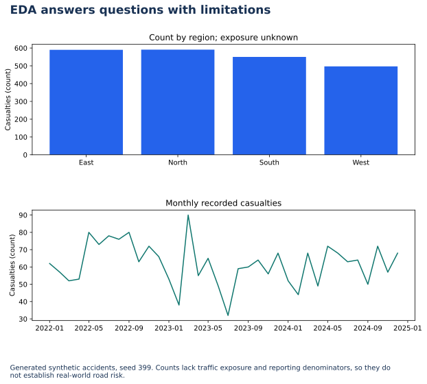

Lecture 15: Mini Case Study — Complete EDA
Syllabus requirement: complete EDA on a real-style dataset — clean, analyze, present findings. Built around the course Road Accident Analysis framing (grain, fact vs dimension, stakeholder questions).
1. Learning Objectives
- 1 Verify dataset grain (1 row = 1 accident) and classify fact vs dimension-like fields.
- 2 Clean types, dates, and obvious quality issues.
- 3 Run descriptive, correlation, grouped, and time-based EDA from L11–L14.
- 4 Answer stakeholder questions with evidence.
- 5 Present findings in a short structured report.
2. Business Brief (from course Road Accident slides)
Stakeholder: Highway / traffic safety leadership.
Core questions:
- What is the pattern of casualties over time?
- Which conditions (weather, road type, speed limit band) show higher risk?
- Where should limited enforcement / engineering resources focus?
Golden rule: every chart must answer at least one stakeholder question.
3. Structure & Grain
- Confirm one row ≈ one incident (
accident_idunique). - Fact-like: casualties, vehicles, speed_limit (measures / event attributes).
- Dimension-like: region, weather, road_type, severity, date parts.
For larger files (course mentions 300K+ row road datasets), profile volume before Power BI import; here we use datasets/accident_teaching.csv for a complete pipeline.
4. End-to-End Workflow
1. Load & profile
shape, dtypes, nulls, unique counts, grain check.
2. Clean
Parse dates; category dtypes; drop/repair impossible values.
3. Describe
Center, spread, skew, kurtosis for casualties & vehicles (L11).
4. Relate
Correlation heatmap for numeric fields (L12).
5. Group
By region, weather, road_type, severity (L13).
6. Time
Monthly counts + moving average (L14).
7. Present
3–5 findings with chart + one recommendation each.
5. Starter Code Skeleton
import pandas as pd
import numpy as np
import seaborn as sns
import matplotlib.pyplot as plt
df = pd.read_csv("datasets/accident_teaching.csv", parse_dates=["date"])
assert df["accident_id"].is_unique
print(df.shape)
print(df.isna().sum())
print(df[["casualties","vehicles","speed_limit"]].describe())
print(df[["casualties","vehicles"]].agg(["skew","kurt"]))
sns.heatmap(df[["speed_limit","vehicles","casualties"]].corr(), annot=True, center=0)
plt.show()
print(df.groupby("region")["casualties"].sum().sort_values(ascending=False))
print(pd.crosstab(df["weather"], df["severity"]))
ts = df.set_index("date").resample("MS")["casualties"].sum()
ts.plot(title="Monthly casualties")
plt.show()6. Deliverable Template
- Data quality: grain, nulls, fixes applied
- Shape: skew/kurtosis note for key measures
- Relationships: strongest correlations
- Segments: top regions / conditions by casualties
- Time: trend direction
- Recommendations: 2–3 actions tied to evidence
7. Knowledge Check
Q1. In this case study, a chart should be kept if:
8. Summary · End of Module 3
- L11–L14 skills combine into one narrative EDA.
- Start from grain and questions; end with evidence-based actions.
- Dataset path:
datasets/accident_teaching.csv.
Worked practice: Complete an EDA narrative
Use accident_teaching.csv to inspect schema, missingness, duplicates, region/month counts and severity distribution. Deliver three observations with units and limitations.
Interpretation check: The 1800 records are generated for teaching. More incidents do not establish greater risk without exposure denominators such as traffic volume or distance traveled; association is not causation.
Download runnable/guided lab: L15 EDA Case Study
Setup, all labs, datasets, DAX measures and capstone guidance · Interactive retail teaching report
EDA answers questions with limitations


Interpret: Does the highest casualty count identify the most dangerous region?
No. Exposure and reporting coverage must be considered.
Read diagram labels (mobile text)
- East
- North
- South
- West
- 0
- 100
- 200
- 300
- 400
- 500
- 600
- Casualties (count)
- Count by region; exposure unknown
- 2022-01
- 2022-05
- 2022-09
- 2023-01
- 2023-05
- 2023-09
- 2024-01
- 2024-05
- 2024-09
- 2025-01
- 30
- 40
- 50
- 60
- 70
- 80
- 90
- Casualties (count)
- Monthly recorded casualties
- EDA answers questions with limitations
- Generated synthetic accidents, seed 399. Counts lack traffic exposure and reporting denominators, so they do
- not establish real-world road risk.
Your reading progress
Completion is self-reported reading progress, not a mastery score. Use the lab and interpretation checks to assess understanding.